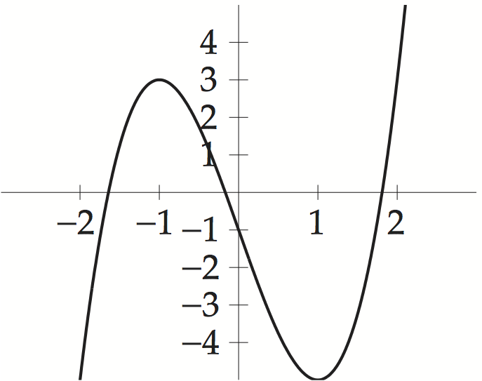
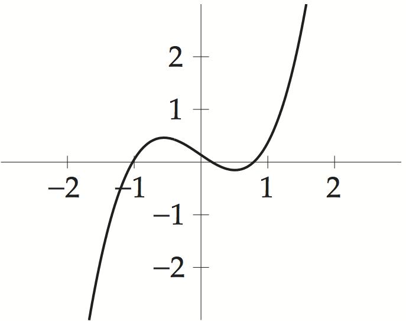
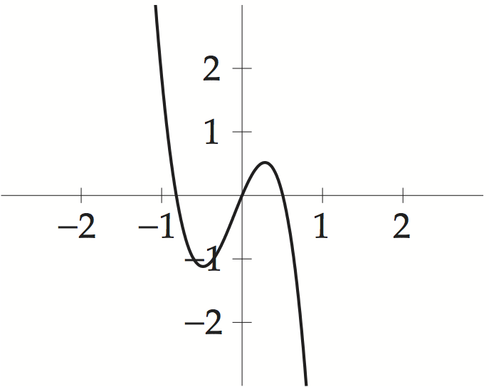

>> f=@(x) x^3-9; >> xc=bisect(f,2,3,5e-7)returns the approximate root \(2.080083\).
1 (b) Similar to (a), on interval \([1,2]\). The command
>> xc=bisect(@(x) 3*x^3+x^2-x-5,1,2,5e-7)returns the approximate root \(1.169726\).
1 (c) Similar to (a), on interval \([6,7]\). The command
>> xc=bisect(@(x) cos(x)^2+6-x,6,7,5e-7)returns the approximate root \(6.776092\).



In part (a), it is clear from the graph that there is a root in each of the three intervals \([-2,-1]\), \([-1,0]\), and \([1,2]\). The command
>> bisect(@(x) 2*x^3-6*x-1,-2,-1,5e-7)yields the first approximate root \(-1.641783\). Repeating for the next two intervals gives the approximate roots \(-0.168254\) and \(1.810038\).
3(b) There are roots in \([-2,-1]\), \([-0.5,0.5]\), and \([0.5, 1.5]\). Using bisect as in part (a) yields the approximate roots \(-1.023482\), \(0.163823\), and \(0.788942\).
3(c) There are roots in \([-1.7,-0.7]\), \([-0.7,0.3]\), and \([0.3,1.3]\). Using bisect as in part (a) yields the approximate roots \(-0.818094\), \(0\), and \(0.506308\).
>> bisect(@(x) x^3-2,1,2,5e-9)yields the approximate cube root \(1.25992105\) in 27 steps.
5 (b) There is a root in the interval \([1,2]\). Using bisect as in (a) gives the approximate cube root \(1.44224957\) in 27 steps.
5 (c) There is a root in the interval \([1,2]\). Using bisect as in (a) gives the approximate cube root \(1.70997595\) in 27 steps.
>> bisect(@(H) pi*H^2*(1-H/3)-1,0,1,0.001)gives the solution \(636\) mm.